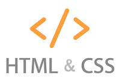
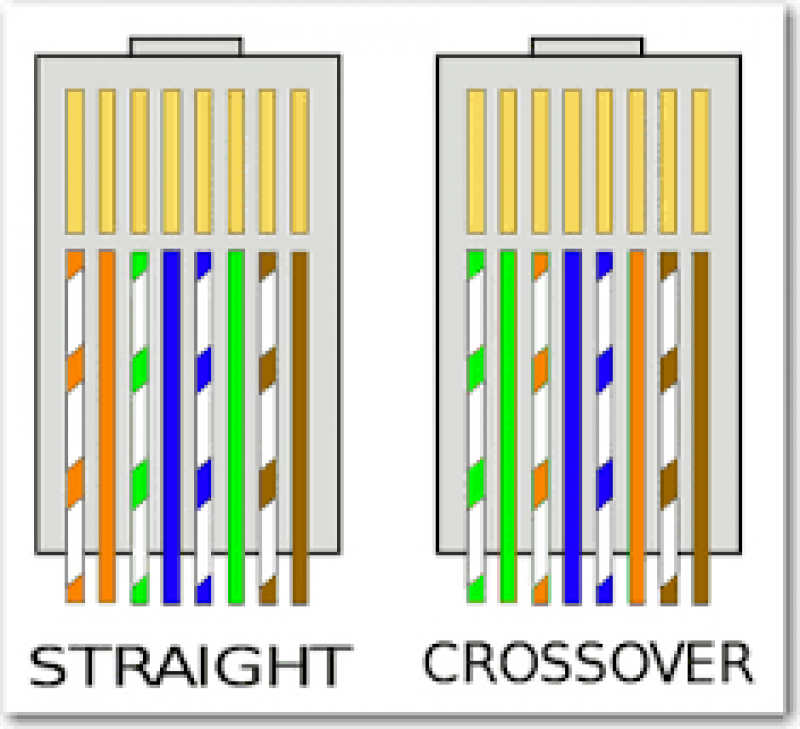
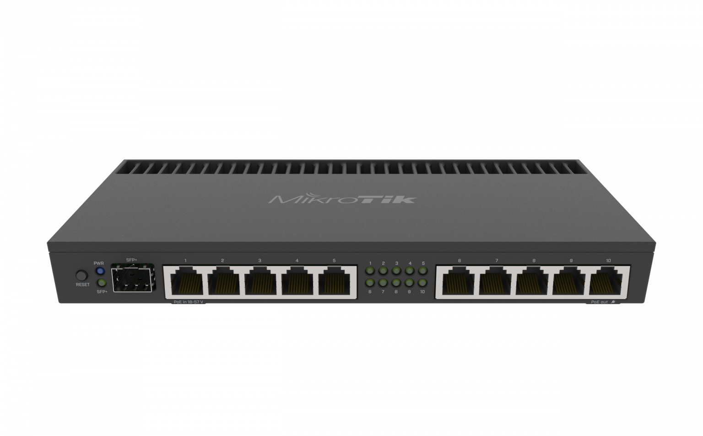
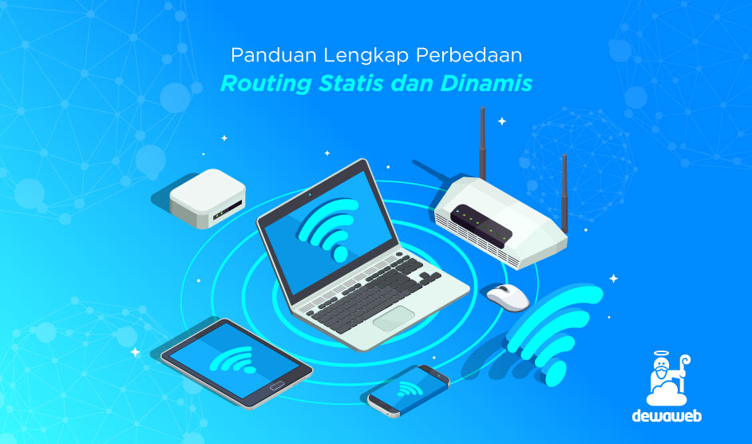

Wikikpedia --
HTML adalah, (HyperText Markup Language) sebuah bahasa standar yang digunakan oleh browser Internet untuk membuat halaman dan dokumen pada sebuah Web yang kemudian dapat diakses dan dibaca layaknya sebuah artikel. HTMLjuga dapat digunakan sebagai link link antara file-file dalam situs atau dalam komputer dengan menggunakan localhost, atau link yang menghubungkan antar situs dalam dunia internet.
Cascading Style Sheet (CSS) merupakan salah satu bahasa pemrograman web untuk mengendalikan beberapa komponen dalam sebuah web sehingga akan lebih terstruktur dan seragam. Sama halnya styles dalam aplikasi pengolahan kata seperti Microsoft Word yang dapat mengatur beberapa style, misalnya heading, subbab, bodytext, footer, images, dan style lainnya untuk dapat digunakan bersama-sama dalam beberapa file. Pada umumnya CSS dipakai untuk memformat tampilan halaman web yang dibuat dengan bahasa HTML dan XHTML.
Cara buat kabel LAN Straight dan Cross

KOMPAS.com --
Kabel straight merupakan kabel yang memiliki cara pemasangan yang sama antara ujung satu dengan ujung yang lainnya. Adapun kegunaan kabel staright :
menghubungkan antara komputer dengan switch
menghubungkan komputer dengan LAN pada modem cable/DSL
menghubungkan router dengan LAN pada modem cable/DSL
menghubungkan switch ke router
menghubungkan hub ke router
Langkah membuat kabel straght:
Urutan warna pada kabel Straight
1. Kupas bagian ujung kabel UTP, kira-kira 2 cm.
2. Buka pilinan kabel, kemudian luruskan dan urutkan warna sesuai standart.
3. Setelah urutan sesuai standar, potong dan ratakan ujung kabel dengan tang crimping
4. Masukkan kabel yang sudah lurus dan sejajar ke dalam konektor RJ-45, dan pastikan semua posisinya sudah benar.
5. Lakukan krimping dan tekan hingga semua pin ( kuningan) pada konektor RJ-45 sudah mengigit pada tiap kabel.
Cara membuat kabel cross :
Kabel cross merupakan kabel yang memiliki sususan berbeda antara ujung satu dengan ujung yang lainnya. Kabel cross digunakan untuk menghubungkan 2 device yang sama. Adapau penggunaan kabel cross :
menghubungkan 2 buah komputer secara langsung
menghubungkan 2 buat switch
menghubungkan 2 buah hub
menghubungkan switch dengan hub
menghubungkan komputer dengan router
Langkah membuat kabel cross :
Urutan warna pada kabel Cross.
Untuk membuat kabel Cross memiliki langkah yang hampir sama dengan kabel Straight, Perbedaannya hanya terletak pada urutan dari kedua ujung kabel. Berbeda dengan kabel straight yang memiliki urutan warna yang sama di kedua ujungnya, kabel cross memiliki urutan warna yang berbeda pada kedua ujung.
Langkah terkahir dari membuat kabel straight dan cross yakni mengecek kabel dengan LAN Tester. Caranya masukan ujung kabel ( konektor RJ-45) ke masing-masing port yang tersedia pada LAN Tester. Pastikan semua lampu LED menyala sesuai urutan kabel yang dibuat.
Apa itu Mikrotik

SindoNews --
Apa itu mikrotik? mikrotik adalah sistem operasi berbasis perangkat lunak yang dapat digunakan untuk mengubah komputer kamu menjadi router jaringan.
Mikrotik menggunakan sistem operasi berbasis Linux yang berfungsi untuk mendukung router jaringan. Dikutip dari laman Biro Administrasi Mutu Akademik dan Informasi Universitas Medan Area, sistem operasi (OS) ini sangat cocok untuk membangun manajemen jaringan komputer skala kecil hingga besar.
Dengan begitu, satu komputer bisa berfungsi sebagai router yang mendistribusikan jaringan internet ke komputer lainnya.
Perbedaan Routing Statis dan Dinamis:

KOMPAS.com --
Routing Statis
Routing statis atau Static Routing adalah proses setting router jaringan menggunakan tabel routing yang dikonfigurasikan secara manual oleh network administrator.
Seorang administrator jaringan akan mengisi setiap entri dalam forwarding table di setiap router yang terhubung pada jaringan tersebut. Mereka harus memasukkan atau menghapus rute statis jika adanya perubahan topologi.
Konsep routing statis merupakan pengaturan routing paling sederhana dalam jaringan komputer. Maka dari itu, penggunaan routing statis cocok untuk jaringan internet skala kecil.
Routing Dinamis
Routing Dinamis (Dynamic Routing) adalah jenis router yang mampu membuat tabel routing secara otomatis berdasarkan lalu lintas jaringan dan router yang terhubung.
Berkebalikan dengan routing statis, routing dinamis memiliki protokol routing yang akan mengatur router secara otomatis untuk saling berkomunikasi dengan memberikan informasi tentang jaringan dan koneksi antar router. Informasi ini digunakan untuk membangun dan memperbaiki table routing-nya.
7 OSI layer

Binus University Learning --
Meskipun dalam praktiknya kita tidak berhubungan langsung dengan model OSI, dan hanya berhubungan dengan protocol, namun model ini selalu digunakan network engineer dalam melakukan analisis dan troubleshooting jaringan komputer sehingga kita perlu memahami cara kerja model OSI.
Fungsi OSI secara singkat :
Physical : Menentukan tegangan, kecepatan, besaran fisik, dan mengalirkan bit-bit antar device
Data Link : Menyediakan akses ke media menggunakan MAC Address dan melakukan error detection
Network : Menyediakan logical addressing dan menentukan rute menuju tujuan
Transport : Menyediakan reliable atau unreliable delivery dan mengecek error connection sebelum transmisi data
Session : Memisahkan data dari berbagai aplikasi
Presentation : Menyajikan data dan menangani proses seperti enkripsi data
Application : Menyediakan user interface